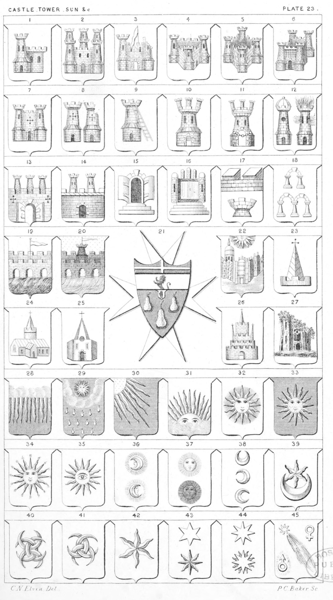

Plate 23.

Plate 23.
- A Tower, on the sinister side, avant
mur.
- Castle triple towered
- Castle breached, or ruined
- Triangular Castle with three towers
- Four square Castle in perspective,
also blazoned a Castle with four
towers placed two in fesse and
two in pale
- Castle with four towers, also termed
square Castle, and a Quadrangular Castle with four towers
- Castle also termed a Port between two
towers
- A Tower; and a Tower breached,
or ruined
- Tower with scaling-ladder raised
against it in bend
- Castle triple-towered
- Castle triple-towered chain transverse
- Castle domed ; and a Tower inflamed,
or flammant
- Castle triple-towered, port displayed
of the field
- Citadel, also blazoned a wall turreted with two towers
- Arch on three degrees with folding
doors open
- Triple-towered gate, double leaved
- Embattlements farsoned; and the
Turrets, or Embattlements of a
Tower
- Arch; and double arch
- Bridge of three Arches, with a fane,
the streams transfluent
- Or on a Bridge of three Arches gu.
over as many streams transfluent
ppr. a tower of the second, thereon a fane ar.
- Gu. three pears or, on a chief ar. a
demi-lion issuant sa. armed and
and langued of the first. The
Chief surmounted of another
with the arms of the order of St.
John of Jerusalem viz, gu. a
cross ar. The Armorial Bearings
of Major Sir Herbert C. Perrott,
Bart., Chevalier of Justice of the
said order
- A College
- Steeple of a Church
- Church
- Chapel
- Antique Temple
- Ruins of an Old Abbey, or Monastery
with ivy and standing on a piece
of ground
- Gu. a chief ar. on the lower part a
cloud, the rays of the sun issuing therefrom ppr.
- The Sun with clouds, distilling
drops of rain
- Rays issuing from dexter chief point
- The Sun rising, or issuant from clouds.
The badge of Prince Napoleon
before he was Emperor of
France; "The Sun rising from
clouds with the motto Emergo"
- Sun
- Az. The Sun in Splendour or.
- Sun in Splendour, each ray illuminated, or inflamed
- Sun in Splendour, charged with an
eye
- Increscent circled; and a Decrescent
circled
- Moon illuminated, or in her compliment, and a Moon in her Detriment, or Eclipse
- Crescent ; Increscent ; and a Decrescent
- Estoile, issuing out of a Crescent
- Four Crescents fretted
- Three Crescents interlaced
- Estoile, or Etoile
- Star of six-points ; and an Estoile
of eight points
- Star of eight-points ; and an Estoile
of sixteen-points
- Blazing Star; or Comet, between the
astronomical symbol of Venus
as borne by Thoyts. and Uranus-
radiated as in the arms of Herschel. Mars ♂ by Wimble and
Stockenstrom